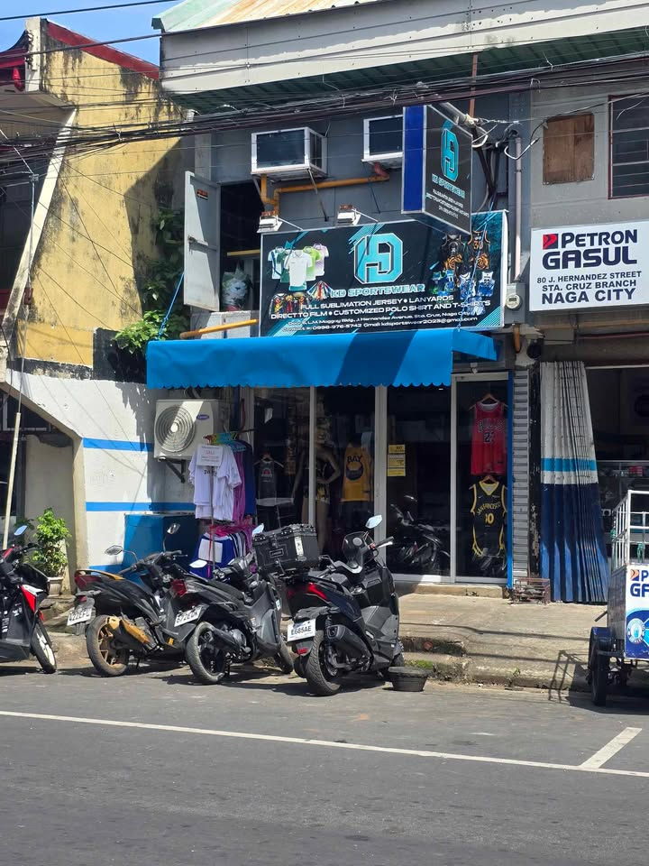
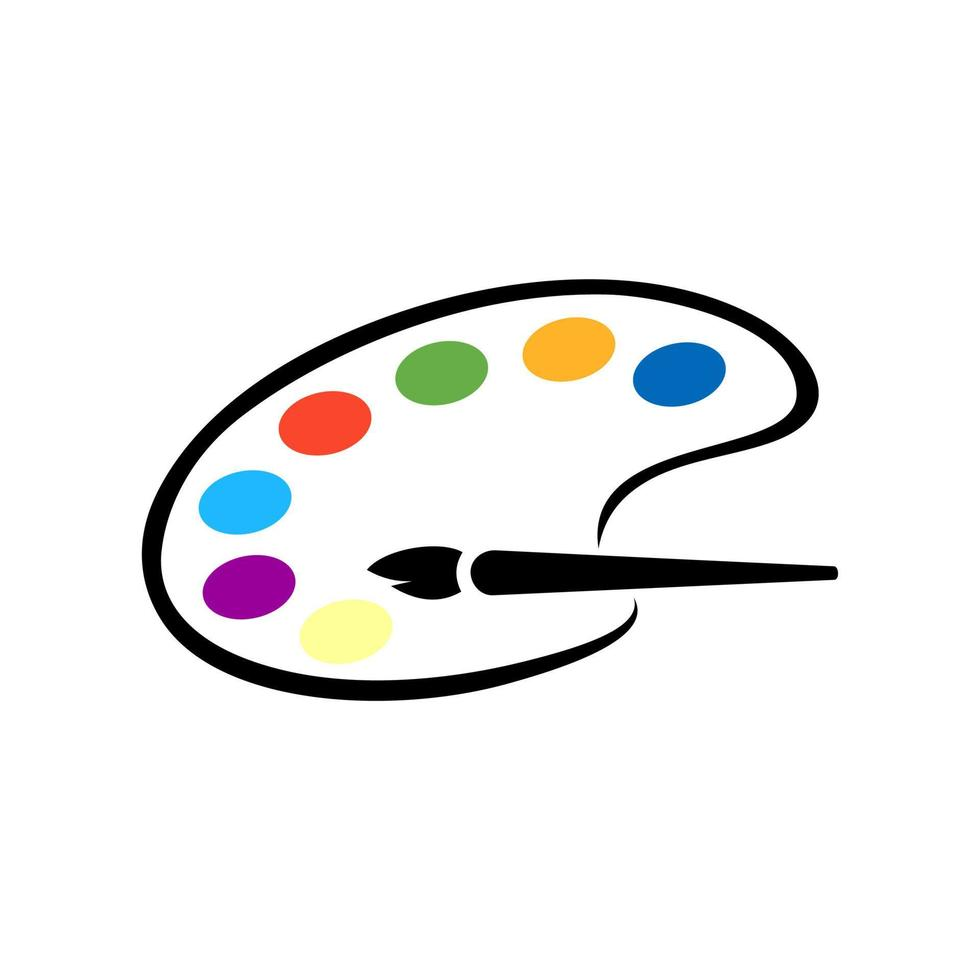
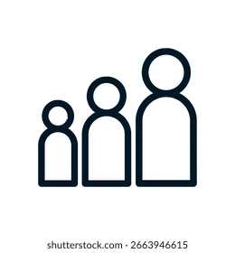
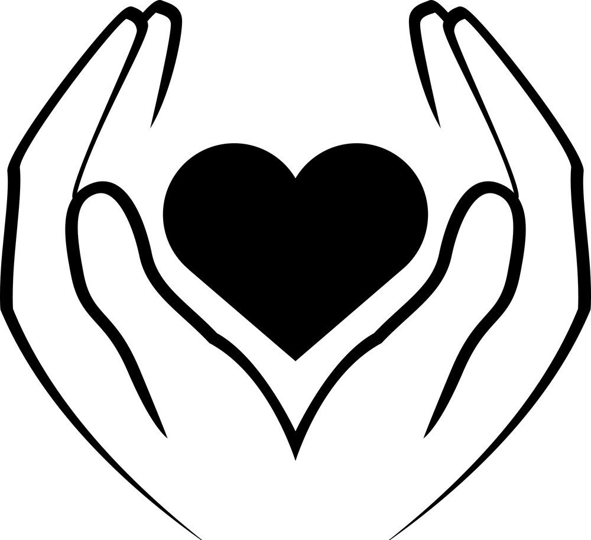

.png)
Mission
- Focus on the "how": To bring your unique vision to wearable reality by providing high-quality, affordable, and personalized apparel with a focus on exceptional customer service.
- Focus on the "what": To enable every team, business, and individual to create and wear custom apparel that tells their story, builds pride, and fosters connection.
- Focus on the "why": To empower creativity and community through custom-designed jerseys, offering a seamless and enjoyable experience from inspiration to final product.
Vision
- Focus on a future ideal: To be the most trusted and sought-after destination for custom sports and fan apparel, recognized for quality, innovation, and customer-centric service.
- Focus on industry leadership: To become the leading custom jersey store, setting the standard for quality, design, and a personalized shopping experience that empowers self-expression.
- Focus on impact: To be the go-to brand for anyone looking to express their passion and identity through custom apparel, creating a world where personalized design is accessible to all.

What makes us unique

Creative Excellence
Every design is crafted with attention to detail and creative passion

Customer Focus
Your vision drives our designs. We collaborate closely with our clients

Quality Materials
Premium fabric and creative techniques for long-lasting results

Made with Passion
We love what we do, and it shows in every piece we create
The Best Jersey Maker in BICOL! 💙 We customize Full Sublimation Sportswear and Uniforms 🏀🏐⚽️🥎🏈🏓🎾🏒🎳🥊🥋🏆
Tatak KD, Tatak Quality‼️💯